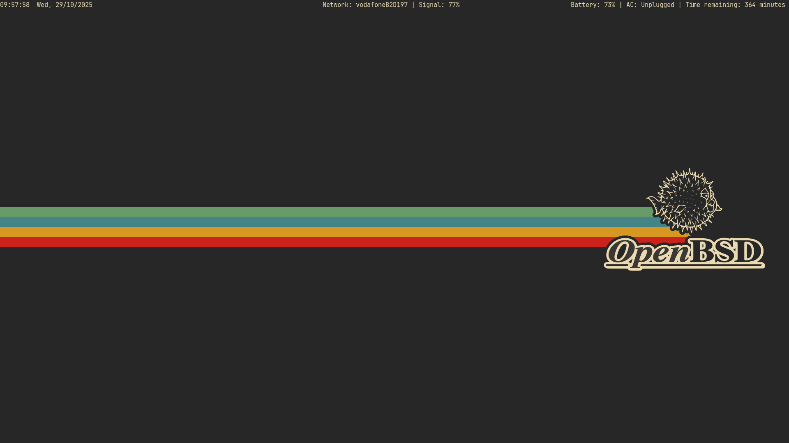

My CWM Config on OpenBSD
In the latest entry in my series where I answer questions nobody asked, here I’ll explain my cwm configuration for my OpenBSD machine.
For those unfamiliar, cwm is the Calm Window Manager. It’s part of the OpenBSD base distribution as one of the native window managers, along with an old version of fvwm and the venerable twm. It’s pretty simple but surprisingly powerful, a floating window manager with some basic manual tiling. It’s keyboard-centric, has an application launcher and highly configurable menus. It uses groups rather than workspaces which provides a lot of flexibility.
My configuration isn’t particularly groundbreaking, but it’s comfy and suits me well. I can happily live in it indefinitely, though I do split my time between cwm and Xfce with occasional forays into other window managers or Wayland compositors. This has nothing to do with cwm limitations and everything to do with me being curious and craving novelty. It’s cwm that I return to, because it’s entirely unsurprising and very capable, and also because it’s part of OpenBSD’s base so I know I’m dealing with software that’s been refined and audited and refined again.

This is my setup. Open image in a new tab for a proper look.
Let’s start off with a brief explanation of my .xsession file, or the parts that are relevant to my cwm config at least. This file is used by xenodm, an xdm fork that ships with OpenBSD as part of their gently modified Xorg implementation, Xenocara.
An excerpt from my .xsession:
xscreensaver --no-splash &
xset b off
picom &
feh --bg-fill /home/antony/Pictures/Wallpapers/obsd-gruvbox-simple.jpg &
~/bin/barscript.sh | lemonbar-xft -B#272727 -F#ebdbb2 -f "JetBrains Mono-7" &
emacs --daemon &
exec dbus-run-session cwmThere’s nothing too surprising here. I launch a screensaver program in the background, turn off angry terminal beeps, run a compositor (note: xcompmgr is in base, I use picom from ports solely because I was getting some odd artefacts with xcompmgr when moving windows. That was with OpenBSD version 7.7 though, so I think I’ll try it again with version 7.8 and see how I get on), then I set the wallpaper with feh, run a bar to give some basic info up at the top, launch an Emacs server, and then dbus runs the window manager itself.
That bar, lemonbar-xft, is pretty nice. It’s basically just a box that shows the output of a shell script. There’s no systray or anything else, which may make it a little too stark for many. But I love the flexibility and the simplicity. It’s a way to have a bit of information that I care about sitting at the top of my screen, and it does nothing else. No surprises, no weird stuff happening in the background that I don’t understand. That’s what I want from my computing environment.
Here’s the script that feeds my bar:
#!/bin/sh
# Simple lemonbar script
#
gettime() {
DATETIME=$(date "+%H:%M:%S %a, %d/%m/%Y")
echo -n "$DATETIME "
}
getnet() {
ISACTIVE=$(ifconfig iwm0 | awk '/status:/ { print $2 }')
NETWORK=$(ifconfig iwm0 | awk '/(nwid|join)/ { print $3 }')
SIGSTRENGTH=$(ifconfig iwm0 | awk 'match($0, /[0-9]*%/) { print substr($0, RSTART, RLENGTH) }')
if [ "$ISACTIVE" = "active" ] ; then
echo -n "Network: $NETWORK | Signal: $SIGSTRENGTH "
else
echo -n "Network: not active "
fi
}
getbatt() {
BATTERY=$(apm -l)
echo -n "Battery: $BATTERY% | "
ADAPTER=$(apm -a)
if [ $ADAPTER = 0 ] ; then
echo -n "AC: Unplugged | "
elif [ $ADAPTER = 1 ] ; then
echo -n "AC: Charging | "
else
echo -n "AC: Unknown | "
fi
BATTLIFE=$(apm -m)
echo -n "Time remaining: $BATTLIFE minutes "
}
while true ; do
echo "%{l}$(gettime) %{c}$(getnet) %{r}$(getbatt)"
sleep 1
doneA few functions to get the time, network info, and battery information and extract useful bits from it. These functions use basic utilities from the base system to tell me what I feel I need to know. You could put whatever you want here though, provided the thing you want outputs to stdout.
Those functions are wrapped in a loop that runs until stopped and just prints the output, using %{l,c,r} to signify positioning.
Onto my cwm configuration file, which lives at ~/.cwmrc:
# When first, 4 = super, M = alt,
# C = Ctrl, S = shift.
# keybindings
bind-key 4-v window-vtile
bind-key 4-h window-snap-left
bind-key 4-j window-snap-down
bind-key 4-k window-snap-up
bind-key 4-l window-snap-right
# Number here refers to mouse button.
# 1 = left, 2 = middle, 3 = right
unbind-mouse M-3
bind-mouse M-3 window-resize This bit defines some window management keybindings. The window-vtile function is the manual tiling I mentioned earlier. It arranges all currently on-screen windows into a master and stack layout, with the currently selected window being in the master position. I frequently use this with just two windows, such as a browser or a document viewer like Zathura on one side and Emacs on the other, to have documentation and my text editor side by side and using the space efficiently without me having to mess about with arranging stuff.
The window-snap functions just move the currently selected window as far as it can go in that direction without leaving the screen.
# windows and borders
ignore xclock
ignore bar
moveamount 5Really simple stuff in here. The window manager ignores xclock and my bar, and using the keyboard to move windows will do it 5 pixels at a time. The default is 1 and it’s pretty slow, I prefer my windows to zoom about like tiny digital puppies.
# appearance
fontname "JetBrainsMono Nerd Font:pixelsize=14"
color menubg "#32302f"
color menufg "#ebdbb2"
color font "#ebdbb2"
color selfont "#32302f"
gap 32 6 6 6Aesthetic bits and bobs. I use my favourite monospace font, take some colours from the gruvbox terminal theme, and define gaps around the edge of the window manager where functions like window-vtile or window-snap-up won’t place clients, ensuring my bar is visible at the top and adding a bit of prettiness to maximised or tiled windows by showing a bit of the wallpaper and the calming grey of the border.
# groups
bind-key M-1 group-only-1
bind-key M-2 group-only-2
bind-key M-3 group-only-3
bind-key M-4 group-only-4
bind-key M-5 group-only-5
bind-key MS-1 window-movetogroup-1
bind-key MS-2 window-movetogroup-2
bind-key MS-3 window-movetogroup-3
bind-key MS-4 window-movetogroup-4
bind-key MS-5 window-movetogroup-5
sticky yes
# ignore bar for purposes of groups
autogroup 0 barThis stuff essentially cajoles cwm’s groups into acting like workspaces. The group-only functions hide all windows that aren’t part of that group and make said group visible. Sticky means that whichever group is visible right now becomes the group for any newly launched windows. Group 0 is special, it’s always visible. That’s where I put my bar.
# application keybindings
bind-key 4-Return alacritty
bind-key 4-d "rofi -show drun"
bind-key 4-e "emacsclient -c -a emacs"
bind-key CMS-s "shutdown -ph now"
# application menu
command firefox firefox
command alacritty alacritty
command emacsclient "emacsclient -c"
command emacs emacs
command zathura zathura
command btop "alacritty -e btop"
command vim "alacritty -e vim ."
command libreoffice libreoffice
command discord "ungoogled-chromium --profile-directory=Default --app-id=mfhpbolkhgobaabcbabdlnhidbjpoogc"
command whatsapp "ungoogled-chromium --profile-directory=Default --app-id=hnpfjngllnobngcgfapefoaidbinmjnm"
command bitwarden "ungoogled-chromium --profile-directory=Default --app-id=hophjnbpmamkldmdaeggjlnpfechpkfl"I define some keybindings for launching applications here. I’ve got my chosen terminal emulator, a client for my Emacs server, and rofi for the odd occasion when I want to use that instead of cwm’s launcher and application menu. I’ve also added a binding for shutting my system down, which is very similar to the default bindings for exiting cwm and restarting it. This is new and I’m anticipating a few accidental shutdowns. Probably don’t do that on your own machine.
After that, we have the application menu. It’s accessed with a right click on the root menu and contains whatever you put in it. I’ve got some of my most used applications, including some Chromium web apps.
And that’s it, my cwm config. This window manager is incredibly easy to work with, it has plenty of power and visually it’s damn near a blank slate, ready and willing to be turned into whatever Dadaist nonsense the unixporn crowd desires.
Couldn't think of an appropriate doodle; have a grumpy fox.
Thanks for reading.
Toodles,
–Antony F.